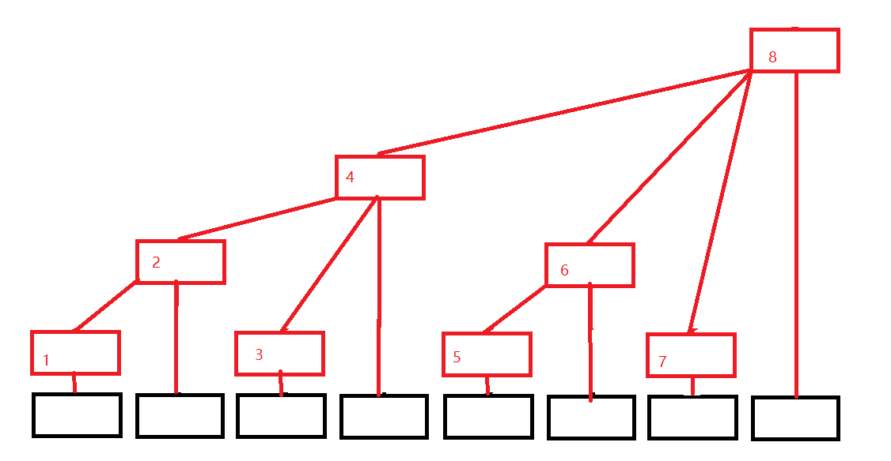

树状数组的用途
在log(n)的复杂度下维护数组1~n的区间。
树状数组的概念

黑色的为原数组a[ ]，红色的为所建树状数组c[ ]。
a[i]可能被哪些c[ ]包括呢
a[i] ~ c[i] c[i+lowbit(i)] c[i+lowbit(i)+lowbit(i+lowbit(i))]…
其中lowbit为从右到左第一个非0且到最右边构成的数。
如在二进制中：
1110 lowbit(1110) = 10；
111 lowbit(111) = 1;
利用计算机补码的储存原理：
lowbit(x) = x & (-x);
（因为负数为其绝对值二进制按位取反+1，然后按位取与即可）
如：
x=1110
(-x)=
0010
x&(-x)=
1110&0010=10
树状数组的创建
再带回上述式子。
假设我有一个数组a[]={1,2,3,4,5};
初始化c[]为0
先将a[1]添加到c[]，
c[1]、c[2]、c[4]、c[8]都加上了a[1]，回到图中，发现确实c[1]、c[2]、c[4]、c[8]与a[1]相通了。（按照自上向下或自下向上的方向）
注：2=1+lowbit(1),4=2+lowbit(2),8=4+lowbit(4)
然后将a[2]添加到c[]
c[2],c[4],c[8]都加上了a[2],回到图中，发现确实c[2]、c[4]、c[8]与a[2]相通了。
然后将a[3]添加到c[]
c[3],c[4]都加上了a[3]，回到图中，发现确实c[3],c[4]与a[3]相通。
注：4=3+lowbit(3)
以此类推。
当每一个数都添加完之后，树状数组也就创建了。
其中，c[]就是从i开始每一个a中下标为i+lowbit(i)的和。
我们输出数组a[]={1,2,3,4,5}的建树过程如下
1 | 1 |
总之，很神奇，不用知道为什么，就这么建树，暂且可以认为是一种很奇妙的规律。
树状数组的查询。
要查询1~i的和。
sum = c[i] + c[i-lowbit(i)] + c[i-lowbit(i)-lowbit(i-lowbit(i))]…条件是c中下标大于等于1
比如想求a中下标为1~4的区间和
sum = c[4]
因为 4 - lowbit(4)结果为0所以停止迭代了
想求a中下标为1~5的区间和
sum
= c[5] + c[5-lowbit(5)]
= c[5] + c[4]
因为4 - lowbit(4)结果为0所以停止迭代了。
树状数组的建立和查询测试代码
1 |
|
树状数组的例题
HDU_1166: 敌兵布阵
Time Limit: 1000 MS Memory Limit: 32 MB 64bit IO Format: %I64d
Description
C国的死对头A国这段时间正在进行军事演习，所以C国间谍头子Derek和他手下Tidy又开始忙乎了。A国在海岸线沿直线布置了N个工兵营地,Derek和Tidy的任务就是要监视这些工兵营地的活动情况。由于采取了某种先进的监测手段，所以每个工兵营地的人数C国都掌握的一清二楚,每个工兵营地的人数都有可能发生变动，可能增加或减少若干人手,但这些都逃不过C国的监视。
中央情报局要研究敌人究竟演习什么战术,所以Tidy要随时向Derek汇报某一段连续的工兵营地一共有多少人,例如Derek问:“Tidy,马上汇报第3个营地到第10个营地共有多少人!”Tidy就要马上开始计算这一段的总人数并汇报。但敌兵营地的人数经常变动，而Derek每次询问的段都不一样，所以Tidy不得不每次都一个一个营地的去数，很快就精疲力尽了，Derek对Tidy的计算速度越来越不满:"你个死肥仔，算得这么慢，我炒你鱿鱼!”Tidy想：“你自己来算算看，这可真是一项累人的工作!我恨不得你炒我鱿鱼呢!”无奈之下，Tidy只好打电话向计算机专家Windbreaker求救,Windbreaker说：“死肥仔，叫你平时做多点acm题和看多点算法书，现在尝到苦果了吧!”Tidy说："我知错了。。。"但Windbreaker已经挂掉电话了。Tidy很苦恼，这么算他真的会崩溃的，聪明的读者，你能写个程序帮他完成这项工作吗？不过如果你的程序效率不够高的话，Tidy还是会受到Derek的责骂的.
Input
第一行一个整数T，表示有T组数据。
每组数据第一行一个正整数N（N<=50000）,表示敌人有N个工兵营地，接下来有N个正整数,第i个正整数ai代表第i个工兵营地里开始时有ai个人（1<=ai<=50）。
接下来每行有一条命令，命令有4种形式：
(1) Add i j,i和j为正整数,表示第i个营地增加j个人（j不超过30）
(2)Sub i j ,i和j为正整数,表示第i个营地减少j个人（j不超过30）;
(3)Query i j ,i和j为正整数,i<=j，表示询问第i到第j个营地的总人数;
(4)End 表示结束，这条命令在每组数据最后出现;
每组数据最多有40000条命令
Output
对第i组数据,首先输出“Case i:”和回车,
对于每个Query询问，输出一个整数并回车,表示询问的段中的总人数,这个数保持在int以内。
Sample Input
1 | 1 |
1 | Sample Output |
题意：
维护一段区间和
思路：
可以用树状数组，要求[i,j]的区间和就是要求[1,j]-[1,i-1]的区间和
AC代码：
1 |
|